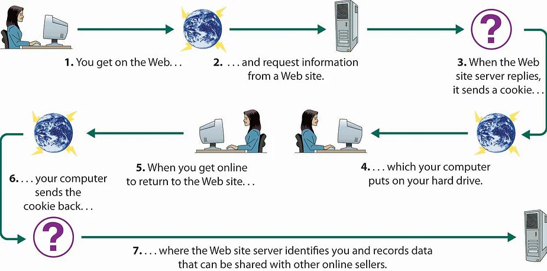

HTTP, web teknolojilerinin dedesi gibidir. Web'in temel iletişim protokolüdür ve tüm web uygulamaları bunu kullanır. Başlangıçta statik web sayfalarını almak için tasarlanmış basit bir protokoldü. Ancak yıllar geçtikçe, günümüzde yaygın olan karmaşık uygulamalara destek sunmak için güncellendi ve genişletildi.
HTTP, istemcinin bir istek gönderdiği ve sunucunun bir yanıtla yanıt verdiği mesaj tabanlı bir model kullanır. Bağlantısızdır, ancak aktarım mekanizması olarak TCP kullanır.
GET /software/htp/cics/index.html HTTP/1.1
Web uygulamalarına saldırdığımızda, genellikle web sunucusuna bir istekte bulunuruz. Bu, yöntemlerimizin muhtemelen bir POST veya GET olacağı anlamına gelir. Bu iki istek arasında ince farklar vardır.
Tek tip kaynak bulucu (URL), kaynağın alınabileceği her web kaynağı için benzersiz bir kimliktir. Bu, web'deki bilgilere erişmek için her gün kullandığımız, tamamen tanıdık URL'dir.
protokol://hostname[:port]/ [/path/] dosya [?param=değer]
HTTP'de çok sayıda HEADERS türü vardır. Bazıları hem istekler hem de yanıtlar için kullanılabilir ve diğerleri mesaj türlerine özeldir. Bunlar, yaygın kullanılan başlık türlerinden bazılarıdır;
| Headers | Açıklama |
|---|---|
| Connection | HTTP iletiminden sonra bağlantının kapanması gerekip gerekmediğini karşı uca söyler |
| Content-Encoding | kodlama türünü belirtir |
| Content-Length | içerik uzunluğunu belirtir |
| Content-Type | içerik türünü belirtir |
| Transfer-Encoding | mesaj gövdesindeki kodlamayı belirtir |
| Headers | Açıklama |
|---|---|
| Accept | sunucuya ne tür içeriği kabul edeceğini belirtir |
| Accept-Encoding | sunucuya ne tür mesaj kodlamasını kabul edeceğini belirtir |
| Authorization | kimlik bilgilerini gönderir |
| Cookie | çerezleri sunucuya gönderir |
| Host | ana bilgisayar adını belirtir |
| If-Modified-Since | tarayıcının kaynağı en son ne zaman aldığını belirtir. Değiştirilmezse, sunucu istemciye önbelleğe alınmış kopyayı kullanma talimatı verir. |
| If-None-Match | varlık etiketini belirtir |
| Origin | isteğin kaynaklandığı etki alanını belirtir |
| Referer | isteği oluşturanın URL'sini belirtir |
| User-Agent | isteği oluşturan tarayıcıyı belirtir |
| Headers | Açıklama |
|---|---|
| Access-Control-Allow-Origin | kaynağın etki alanları arası yoluyla alınıp alınamayacağını belirtir |
| Cache-Control | önbelleğe alma yönergesini göz atmaya iletir |
| Etag | bir varlık etiketi belirtir (sunucuya önbellekteki sürümü bildirir) |
| Expires | mesaj gövdesinin içeriğinin ne kadar süreyle geçerli olduğunu belirtir |
| Location | yönlendirme yanıtlarında kullanılır (3xx) |
| Pragma | önbelleğe alma yönergelerini tarayıcıya iletir |
| Server | web sunucusu yazılımını belirtir |
| Set-Cookie | çerezleri yayınlar |
| WWW-Authenticate | desteklenen kimlik doğrulama türünün ayrıntılarını sağlar |
| X-Frame-Options | tarayıcı çerçevesinde yanıtın yüklenip yüklenmeyeceği ve nasıl yüklenebileceği |
Çerezler, HTTP'nin kritik bir parçasıdır. Tanımlama bilgileri, sunucunun istemciye veri öğeleri göndermesini sağlar ve istemci bu verileri depolar ve sunucuya bir sonraki istek yapıldığında sunucuya yeniden gönderir. Sunucu, SET-COOKIE yanıt başlığını kullanarak istemciye bir tanımlama bilgisi verir.
SetCookie: Tracking=abcdef12389
Kullanıcı sunucuya sonraki bir istekte bulunduğunda, çerez başlığa eklenir.
Tanımlama bilgileri, kullanıcıyı sunucuya ve diğer önemli bilgileri sunucuya tanıtmak için kullanılır. Bu tanımlama bilgileri genellikle bir ad/değer çiftidir ve boşluk içermez.
Her HTTP yanıtı, isteğin sonucunu gösteren bir status kodu içermelidir. Kodun ilk basamağına göre beş grup durum kodu vardır.
| Kod | Açıklama |
|---|---|
| 1xx | Bilgilendirici |
| 2xx | Başarı |
| 3xx | Yönlendirme |
| 4xx | Hata |
| 5xx | Sunucu bir hatayla karşılaştı |
Karşılaşma ihtimalinizin en yüksek olduğu status kodları:
| Kod | Açıklama |
|---|---|
| 100 | Devam |
| 200 | Tamam |
| 201 | Oluşturuldu |
| 301 | Kalıcı Olarak Taşındı |
| 302 | Bulundu |
| 304 | Değiştirilmedi |
| 400 | Hatalı İstek |
| 401 | Yetkisiz |
| 403 | Yasak |
| 404 | Bulunamadı |
| 405 | Yönteme İzin Verilmiyor |
| 413 | İstek Varlığı Çok Büyük |
| 414 | İstek URI'si Çok Uzun |
| 500 | Dahili Sunucu Hatası |
| 503 | Hizmet Kullanılamıyor |
HTTP protokolü, düz TCP'de iletilir. Şifrelenmemiş olduğu ve MITM saldırılarına ve istemci ile sunucu arasında konumlanmış bir saldırgan tarafından gerçekleştirilen bu tür diğer saldırılara açık olduğu anlamına gelir. HTTPS, temelde HTTP ile aynıdır, ancak bunun yerine Secure Sockets Layer (SSL) kullanılarak tünellenir. Bu sayede verilerin gizliliği ve bütünlüğü korunmaktadır.
HTTP proxy, istemcinin tarayıcısı ile web sunucusu arasındaki bir sunucudur. İstemci tarayıcısı HTTP proxy'sini kullanacak şekilde yapılandırıldığında, İnternet'e yapılan tüm istekler önce proxy'ye gitmelidir. Proxy daha sonra isteği iletir ve istemciyi iletmeden önce yanıtı alır. Bu şekilde, HTTP proxy erişim kontrolü, önbelleğe alma, kimlik doğrulama ve içerik filtreleme sağlayabilir.